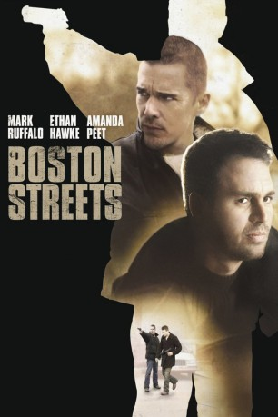

#5048 Boston Streets
Alternativ: What Doesn't Kill You
 
 IMDB-Wertung: 6.6 / 10
IMDB-Wertung: 6.6 / 10  Metascore: 0
Metascore: 0 
Das harte Gesetz der Straße regiert in South Boston. Diebstahl, Raubüberfälle, Drogenhandel, Schutzgelderpressung sind der Alltag, in den die Kumpel Paulie und Brian von Kindheit an hinein wachsen. Aus kleinen Gefälligkeiten für den lokalen Boss werden immer größere "Jobs", bis die erwachsenen Kleinganoven schließlich für fünf Jahre hinter Gittern landen.
Jahr: 2008
Dauer: 100 Minuten
FSK: 16
Land: USA Studio: Yari Film Group ReleasingTonspuren:
Untertitel: Deutsch,
Auflösung: 720p (1280x544) Größe: 4474 MB
Genre: Drama, Krimi
Regisseur:  Brian Goodman
Brian Goodman
Drehbuch: Charlie Cohen
Soundtrack:
Darsteller:
 Mark Ruffalo als Brian Reilly
Mark Ruffalo als Brian Reilly Ethan Hawke als Paulie McDougan
Ethan Hawke als Paulie McDougan Amanda Peet als Stacy Reilly
Amanda Peet als Stacy Reilly Will Lyman als Sully
Will Lyman als Sully Brian Goodman als Pat Kelly
Brian Goodman als Pat Kelly Donnie Wahlberg als Detective Moran
Donnie Wahlberg als Detective Moran Angela Featherstone als Katie
Angela Featherstone als Katie- Edward Lynch als Jackie
- Oscar Wahlberg als Mark, 10 Years Old
 Johnny Serret als Young Brian
Johnny Serret als Young Brian- Holly Karrol Clark als Waitress / Kim
 Leif Riddell als Off Duty Officer
Leif Riddell als Off Duty Officer Lenny Clarke als Hogie
Lenny Clarke als Hogie- Richard Lane Jr. als Gunther - Poodle Napper
 John Fiore als Creep / Murder Victim
John Fiore als Creep / Murder Victim Rich Skinner als Chappy
Rich Skinner als Chappy- Dennis Lynch als Carpet Store Driver
- Danny Naten als Callahan / Guard
- Kevin McCormick als Steroid Geek #2
- Lindsey McKeon als Nicole
 Bates Wilder als Doctor
Bates Wilder als Doctor- Kelly Holleman als Nurse
- Vic Clay als Robert Stavos / Child Molester
 Tom Kemp als Captain Stover
Tom Kemp als Captain Stover Robert Kelly als Gas Man
Robert Kelly als Gas Man Steve Sweeney als Power Wash Jerry
Steve Sweeney als Power Wash Jerry- Brian Scannell als Eddie
- Christopher Connolly als Bartender
- Barry Ace als Prison Inmate , uncredited
 Chemi Che-Mponda als Prison Visitor , uncredited
Chemi Che-Mponda als Prison Visitor , uncredited- Lorenne Clarke als Store Owner , uncredited
 Keith Fluker als Security Guard , uncredited
Keith Fluker als Security Guard , uncredited Susan Garibotto als Paulie's Mother , uncredited
Susan Garibotto als Paulie's Mother , uncredited Dan Marshall als AA Meeting Member , uncredited
Dan Marshall als AA Meeting Member , uncredited Ed O'Keefe als Prison Guard , uncredited
Ed O'Keefe als Prison Guard , uncredited- Michael Yebba als Roundman / Old Lady
- Brian Connolly als Sean
- Nathaniel Smyth als Mark, 5 Years Old
- Thomas Regan als Young Paulie
- George Khoury als Delivery Man
 Jay Giannone als Matt
Jay Giannone als Matt- Michael Balcanoff als Marius
- Joseph Bavis als Polack
- Katelyn Cahill als Young Stacy
- Michael Testone als Anthony
- T. Sean Ferguson als Alcoholic Speaker #1
- Brienne De Beau als Lisa / Waitress
- Richard Italiano als Tommy
- Will Le Bow als Burt - Jeweler
- Bo Cleary als Steroid Geek #1
Datei: X:\2008(A-F)\Boston Streets (2008, FSK16, 1280x544).mkv seit 22.12.2016
Festplatte: HD 2007(A-Z)-2008(A-F)
 Es gibt insgesamt 66 Filme in der Gruppe '2008(A-F)'
Es gibt insgesamt 66 Filme in der Gruppe '2008(A-F)'